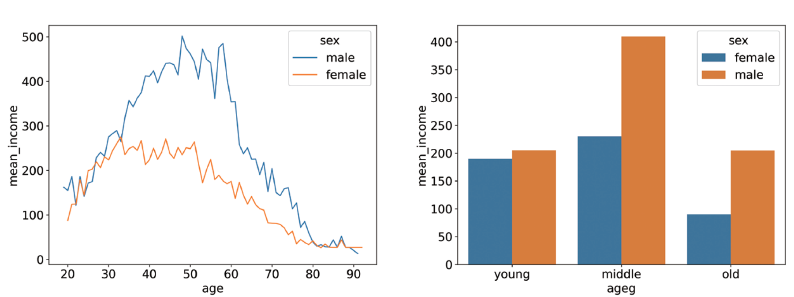
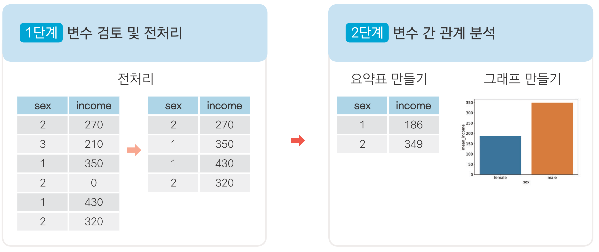
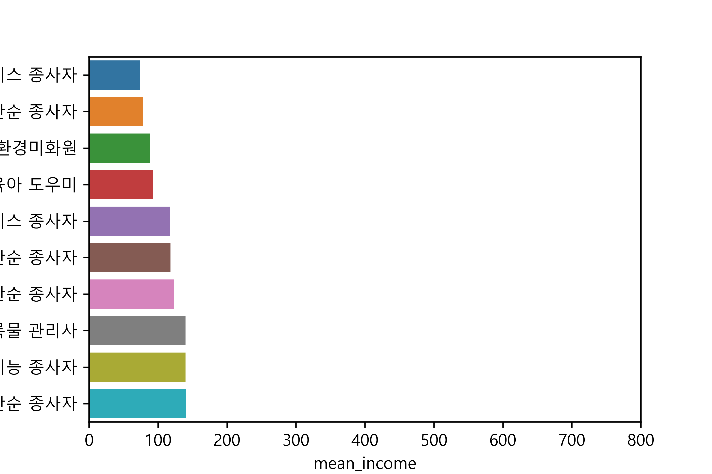
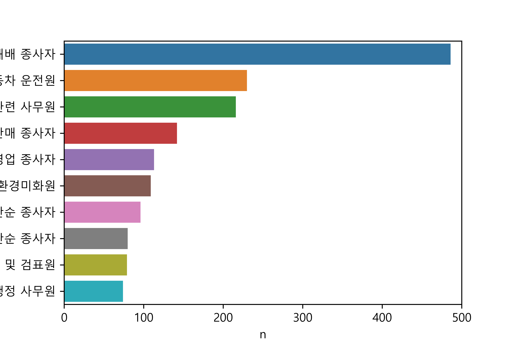
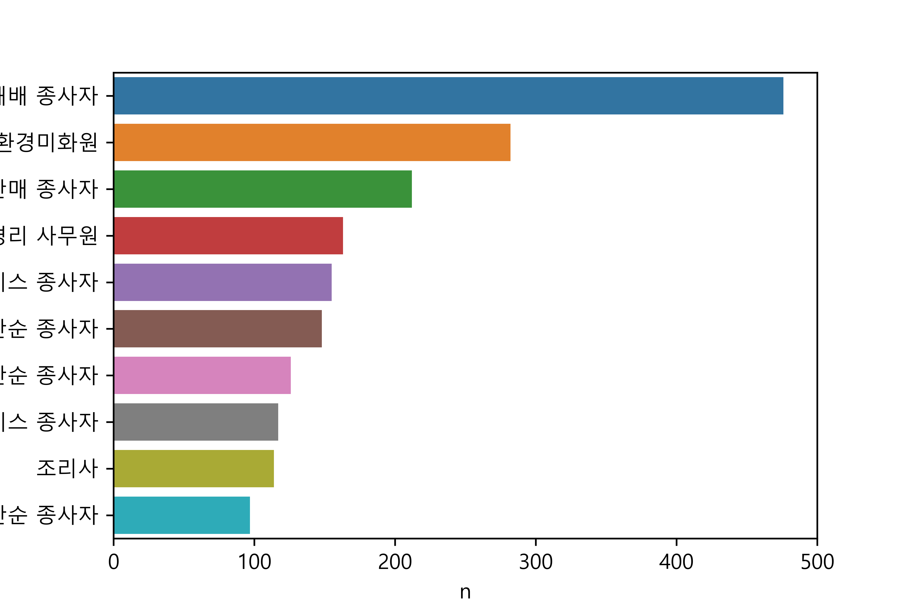
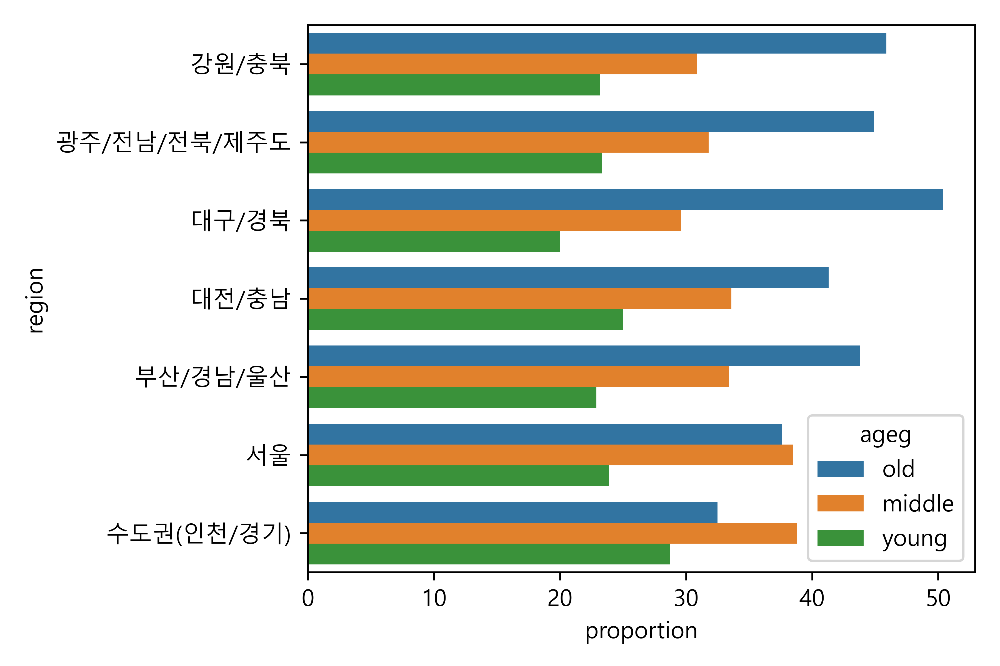
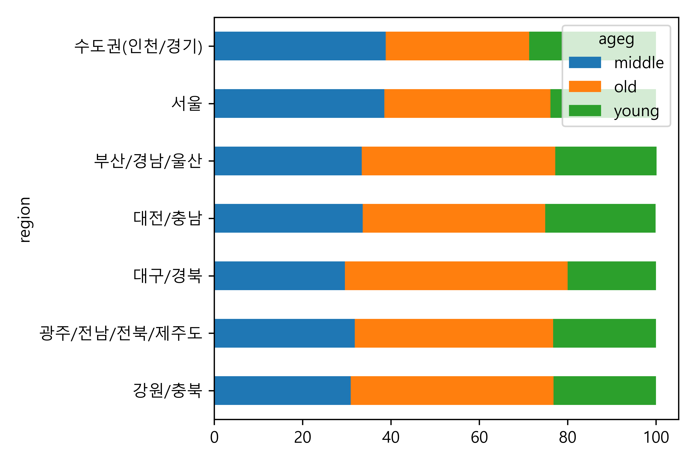
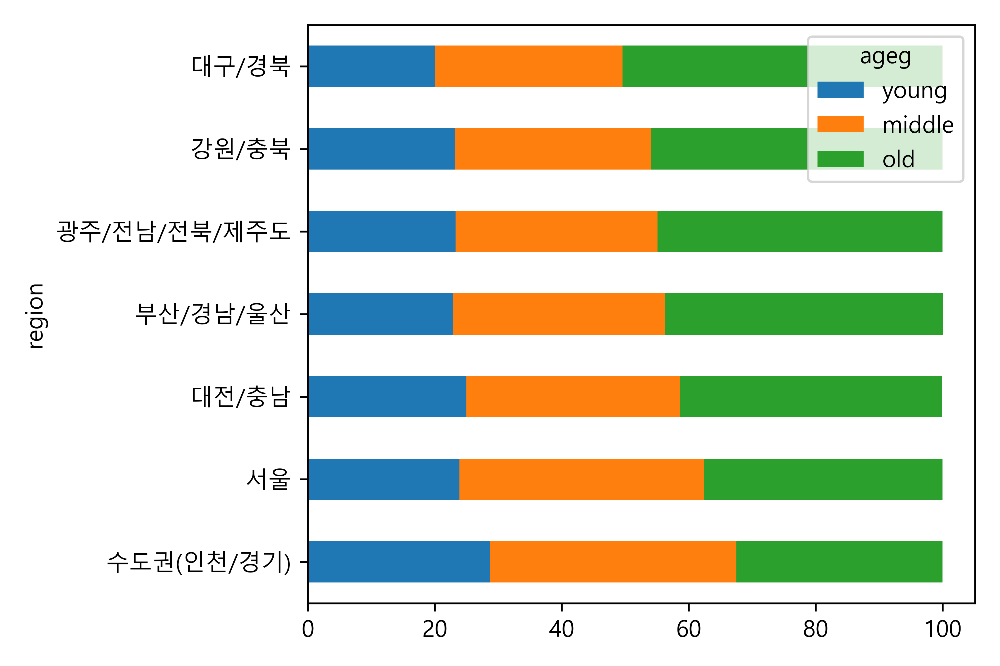

import pandas as pd
import numpy as np
import seaborn as snsDo it! 쉽게 배우는 파이썬 데이터 분석
09 데이터 분석 프로젝트
- 한국인의 삶을 파악하라!

목차
09-1 ‘한국복지패널 데이터’ 분석 준비하기(link)
09-2 성별에 따른 월급 차이 - 성별에 따라 월급이 다를까?(link)
09-3 나이와 월급의 관계 - 몇 살 때 월급을 가장 많이 받을까?(link)
09-4 연령대에 따른 월급 차이 - 어떤 연령대의 월급이 가장 많을까?(link)
09-5 연령대 및 성별 월급 차이 - 성별 월급 차이는 연령대별로 다를까?(link)
09-6 직업별 월급 차이 - 어떤 직업이 월급을 가장 많이 받을까?(link)
09-7 성별 직업 빈도 - 성별에 따라 어떤 직업이 가장 많을까?(link)
09-8 종교 유무에 따른 이혼율 - 종교가 있으면 이혼을 덜 할까?(link)
09-9 지역별 연령대 비율 - 어느 지역에 노년층이 많을까?(link)
09-1 ‘한국복지패널 데이터’ 분석 준비하기
한국복지패널 데이터
- 한국보건사회연구원 발간 조사 자료
- 전국 7,000여 가구 선정, 2006년부터 매년 추적 조사한 자료
- 경제활동, 생활실태, 복지욕구 등 천여 개 변수로 구성됨
- 다양한 분야의 연구자, 정책전문가들이 활용함
- 엄밀한 절차로 수집되고 다양한 변수가 있으므로 데이터 분석 연습하기 좋은 재료
데이터 분석 준비하기
1. 데이터 준비하기
Koweps_hpwc14_2019_beta2.sav파일을 워킹 디렉터리에 삽입- 2020년 발간 복지패널 데이터. 6,331가구, 14,418명의 정보를 담고 있음
2. 패키지 설치 및 로드하기
sav: 통계 분석 소프트웨어 SPSS 전용 파일pyreadstat패키지 설치하면pandas패키지를 이용해 불러올 수 있음
(1) 패키지 설치
`pip install pyreadstat`(2) 패키지 로드
3. 데이터 불러오기
4. 데이터 검토하기
- 규모가 큰 데이터는 변수명을 쉬운 단어로 바꾸고 분석할 변수를 하나씩 살펴봐야 함
5. 변수명 바꾸기
- 규모가 큰 조사 자료는 데이터의 특징을 설명해 놓은 코드북(codebook)을 함께 제공함
- 코드북에 코드로 된 변수명과 값의 의미가 설명되어 있음
- 데이터의 특징을 알 수 있고 분석 방향 아이디어를 얻을 수 있음
Koweps_Codebook_2019.xlsx참고
데이터 분석 절차 살펴보기
1단계 - 변수 검토 및 전처리
- 분석에 활용할 변수 전처리
- 변수의 특징 파악, 이상치와 결측치 정제
- 변수의 값을 다루기 편하게 바꾸기
- 분석에 활용할 변수 각각 전처리
- ex) 성별에 따른 월급 차이: 성별, 월급 각각
2단계 - 변수 간 관계 분석
- 변수 간 관계 분석
- 데이터 요약 표, 그래프 만들기
- 분석 결과 해석

09-2 성별에 따른 월급 차이
- 성별에 따라 월급이 다를까?
성별 변수 검토 및 전처리하기
1. 변수 검토하기
2. 전처리하기
월급 변수 검토 및 전처리하기
1. 변수 검토하기
2. 전처리하기
count 4534.000000
mean 268.455007
std 198.021206
min 0.000000
25% 150.000000
50% 220.000000
75% 345.750000
max 1892.000000
Name: income, dtype: float64성별에 따른 월급 차이 분석하기
1. 성별 월급 평균표 만들기
sex mean_income
0 female 186.293096
1 male 349.0375712. 그래프 만들기
09-3 나이와 월급의 관계
- 몇 살 때 월급을 가장 많이 받을까?
나이 변수 검토 및 전처리하기
1. 변수 검토하기
2. 전처리하기
count 14418.000000
mean 1969.280205
std 24.402250
min 1907.000000
25% 1948.000000
50% 1968.000000
75% 1990.000000
max 2018.000000
Name: birth, dtype: float643. 파생변수 만들기 - 나이
나이와 월급의 관계 분석하기
1. 나이에 따른 월급 평균표 만들기
mean_income
age
19.0 162.000000
20.0 121.333333
21.0 136.400000
22.0 123.666667
23.0 179.6764712. 그래프 만들기
09-4 연령대에 따른 월급 차이
- 어떤 연령대의 월급이 가장 많을까?
연령대 변수 검토 및 전처리하기
파생변수 만들기 - 연령대
연령대에 따른 월급 차이 분석하기
1. 연령대별 월급 평균표 만들기
ageg mean_income
0 middle 329.157157
1 old 140.129003
2 young 195.6634242. 그래프 만들기
09-5 연령대 및 성별 월급 차이
- 성별 월급 차이는 연령대별로 다를까?
연령대 및 성별 월급 차이 분석하기
1. 연령대 및 성별 월급 평균표 만들기
ageg sex mean_income
0 middle female 230.481735
1 middle male 409.541228
2 old female 90.228896
3 old male 204.570231
4 young female 189.822222
5 young male 204.9095482. 그래프 만들기

나이 및 성별 월급 차이 분석하기
age sex mean_income
0 19.0 male 162.000000
1 20.0 female 87.666667
2 20.0 male 155.000000
3 21.0 female 124.000000
4 21.0 male 186.00000009-6 직업별 월급 차이
- 어떤 직업이 월급을 가장 많이 받을까?
직업 변수 검토 및 전처리하기
1. 변수 검토하기
2. 전처리하기
code_job job
0 111 의회 의원∙고위 공무원 및 공공단체 임원
1 112 기업 고위 임원
2 121 행정 및 경영 지원 관리자
3 122 마케팅 및 광고∙홍보 관리자
4 131 연구∙교육 및 법률 관련 관리자# welfare에 list_job 결합하기
welfare = welfare.merge(list_job, how = 'left', on = 'code_job')
# code_job 결측치 제거하고 code_job, job 출력
welfare.dropna(subset = ['code_job'])[['code_job', 'job']].head() code_job job
2 762.0 전기공
3 855.0 금속기계 부품 조립원
7 941.0 청소원 및 환경미화원
8 999.0 기타 서비스 관련 단순 종사자
14 312.0 경영 관련 사무원직업별 월급 차이 분석하기
1. 직업별 월급 평균표 만들기
job mean_income
0 가사 및 육아 도우미 92.455882
1 간호사 265.219178
2 감정∙기술영업및중개관련종사자 391.000000
3 건물 관리원 및 검표원 168.375000
4 건설 및 광업 단순 종사자 261.9750003. 그래프 만들기
(1) 월급이 많은 직업
job mean_income
98 의료 진료 전문가 781.000000
60 법률 전문가 776.333333
140 행정 및 경영 지원 관리자 771.833333
63 보험 및 금융 관리자 734.750000
110 재활용 처리 및 소각로 조작원 688.000000
131 컴퓨터 하드웨어 및 통신공학 전문가 679.444444
24 기계∙로봇공학 기술자 및 시험원 669.166667
6 건설∙전기 및 생산 관련 관리자 603.083333
120 제관원 및 판금원 597.000000
100 의회 의원∙고위 공무원 및 공공단체 임원 580.500000(2) 월급이 적은 직업
job mean_income
33 기타 돌봄∙보건 및 개인 생활 서비스 종사자 73.964286
34 기타 서비스 관련 단순 종사자 77.789474
128 청소원 및 환경미화원 88.461756
0 가사 및 육아 도우미 92.455882
43 돌봄 및 보건 서비스 종사자 117.162338
97 음식 관련 단순 종사자 118.187500
39 농림∙어업 관련 단순 종사자 122.625000
139 학예사∙사서 및 기록물 관리사 140.000000
126 채굴 및 토목 관련 기능 종사자 140.000000
135 판매 관련 단순 종사자 140.909091
09-7 성별 직업 빈도
- 성별에 따라 어떤 직업이 가장 많을까?
성별 직업 빈도 분석하기
1. 성별 직업 빈도표 만들기
job n
107 작물 재배 종사자 486
104 자동차 운전원 230
11 경영 관련 사무원 216
46 매장 판매 종사자 142
89 영업 종사자 113
127 청소원 및 환경미화원 109
4 건설 및 광업 단순 종사자 96
120 제조 관련 단순 종사자 80
3 건물 관리원 및 검표원 79
141 행정 사무원 74성별 직업 빈도 분석하기
1. 성별 직업 빈도표 만들기
job n
83 작물 재배 종사자 476
91 청소원 및 환경미화원 282
33 매장 판매 종사자 212
106 회계 및 경리 사무원 163
31 돌봄 및 보건 서비스 종사자 155
87 제조 관련 단순 종사자 148
73 음식 관련 단순 종사자 126
58 식음료 서비스 종사자 117
88 조리사 114
24 기타 서비스 관련 단순 종사자 972. 그래프 만들기

2. 그래프 만들기

09-8 종교 유무에 따른 이혼율
- 종교가 있으면 이혼을 덜 할까?
종교 변수 검토 및 전처리하기
1. 변수 검토하기
2. 전처리하기
혼인 상태 변수 검토 및 전처리하기
1. 변수 검토하기
2. 파생변수 만들기 - 이혼 여부
marriage n
0 divorce 689
1 etc 6539
2 marriage 7190종교 유무에 따른 이혼율 분석하기
1. 종교 유무에 따른 이혼율표 만들기
religion marriage proportion
0 no marriage 0.905045
1 no divorce 0.094955
2 yes marriage 0.920469
3 yes divorce 0.0795312. 그래프 만들기
religion marriage proportion
1 no divorce 9.5
3 yes divorce 8.0연령대 및 종교 유무에 따른 이혼율 분석하기
1. 연령대별 이혼율표 만들기
ageg marriage proportion
0 middle marriage 0.910302
1 middle divorce 0.089698
2 old marriage 0.914220
3 old divorce 0.085780
4 young marriage 0.950000
5 young divorce 0.050000 ageg marriage count
0 middle marriage 3552
1 middle divorce 350
2 old marriage 3581
3 old divorce 336
4 young marriage 57
5 young divorce 32. 연령대별 이혼율 그래프 만들기
ageg marriage proportion
1 middle divorce 9.0
3 old divorce 8.63. 연령대 및 종교 유무에 따른 이혼율표 만들기
ageg religion marriage proportion
0 middle no marriage 0.904953
1 middle no divorce 0.095047
2 middle yes marriage 0.917520
3 middle yes divorce 0.082480
4 old no marriage 0.904382
5 old no divorce 0.095618
6 old yes marriage 0.922222
7 old yes divorce 0.0777784. 연령대 및 종교 유무에 따른 이혼율 그래프 만들기
ageg religion marriage proportion
1 middle no divorce 9.5
3 middle yes divorce 8.2
5 old no divorce 9.6
7 old yes divorce 7.809-9 지역별 연령대 비율
- 어느 지역에 노년층이 많을까?
지역 변수 검토 및 전처리하기
1. 변수 검토하기
2. 전처리하기
지역별 연령대 비율 분석하기
1. 지역별 연령대 비율표 만들기
region ageg proportion
0 강원/충북 old 0.459103
1 강원/충북 middle 0.308707
2 강원/충북 young 0.232190
3 광주/전남/전북/제주도 old 0.449311
4 광주/전남/전북/제주도 middle 0.317924
5 광주/전남/전북/제주도 young 0.232766
6 대구/경북 old 0.504051
7 대구/경북 middle 0.296296
8 대구/경북 young 0.199653
9 대전/충남 old 0.413372
10 대전/충남 middle 0.336449
11 대전/충남 young 0.250180
12 부산/경남/울산 old 0.4375002. 그래프 만들기

3. 누적 비율 막대 그래프 만들기
(1) 피벗하기
# 피벗
pivot_df = \
region_ageg[['region', 'ageg', 'proportion']].pivot(index = 'region',
columns = 'ageg',
values = 'proportion')
pivot_dfageg middle old young
region
강원/충북 30.9 45.9 23.2
광주/전남/전북/제주도 31.8 44.9 23.3
대구/경북 29.6 50.4 20.0
대전/충남 33.6 41.3 25.0
부산/경남/울산 33.4 43.8 22.9
서울 38.5 37.6 23.9
수도권(인천/경기) 38.8 32.5 28.7(2) 그래프 만들기

(3) 막대 정렬하기
